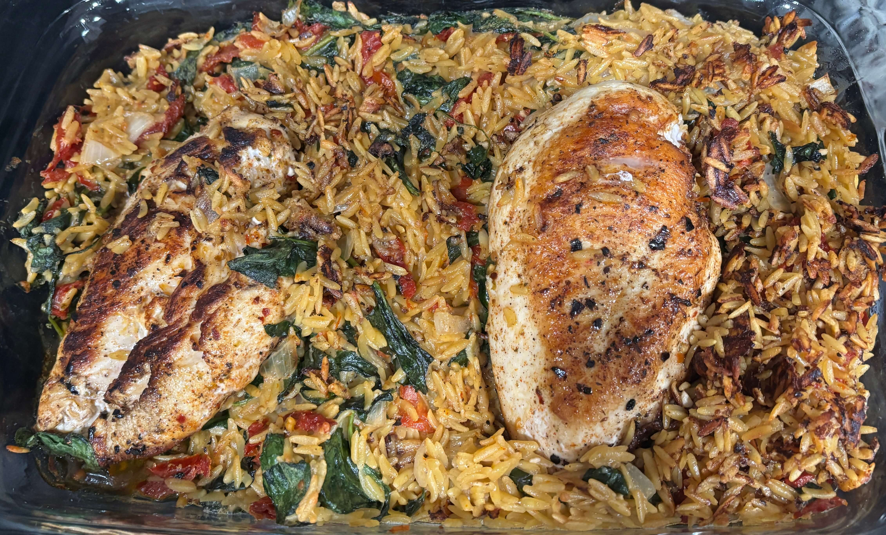

Home
Creamy Chicken Orzo

Ingredients
- 2 tablespoons extra virgin olive oil
- 1 pound boneless, skinless chicken breasts or small thighs
- 1 teaspoon dried oregano
- 1 teaspoon paprika
- 1/4-1/2 teaspoon crushed red pepper flakes
- kosher salt and black pepper
- 2 tablespoons butter
- 1 medium shallot, chopped
- 2 cloves garlic, minced or grated
- 1 cup dry orzo pasta
- 1/3 cup dry white wine, such as Pinot Grigio or Sauvignon Blanc
- 1 cup heavy cream
- 2 teaspoons Dijon mustard
- 1/3 cup grated parmesan cheese
- 2 cups fresh baby spinach
- 1/2 cup oil packed sun-dried tomatoes, oil drained
- juice of 1 lemon
- fresh rosemary, for serving (optional)
Steps
- Preheat the oven to 400 degrees F.
- Heat 1 tablespoon olive oil in a large oven-safe skillet set over medium-high heat. Rub the chicken with 1 tablespoon olive oil, the oregano, paprika, red pepper flakes, salt, and pepper. When the oil is shimmering, add the chicken. Sear on both sides until golden, about 3-5 minutes per side. Remove the chicken from the skillet.
- To the same skillet, add the butter and shallot, cooking until fragrant, about 3 minutes. Add the garlic and orzo, cooking until lightly golden, 2-3 minutes. Add the wine and de-glaze the pan. Add 1 1/2 cups water. Bring to a boil, cook 3-5 minutes, then add the cream, mustard, parmesan, spinach, and sun-dried tomatoes, stirring until the spinach has wilted. Slide the chicken and any juices left on the plate back into the skillet. Transfer to the oven and cook, uncovered for 10-15 minutes, until the chicken is cooked through.
- Serve the chicken topped with lemon juice and rosemary, if desired.